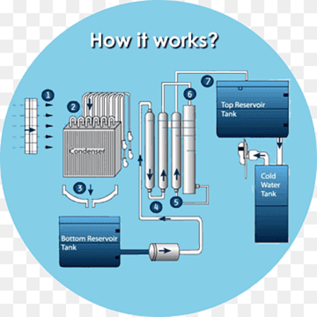
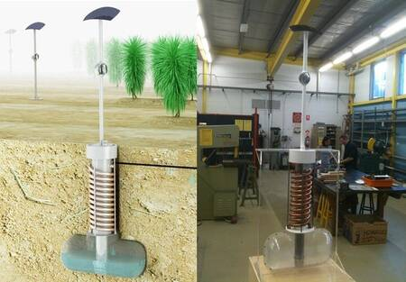

Single Stage Water Generation
Uses vacuum distillation to convert seawater into high-quality freshwater for domestic and process utilization on ships, rigs, as well as in remote onshore locations. Desalination of seawater is an economically feasible and reliable solution. The units are small, can be self installed and are easy to repair while still in the ground. Linacre sees farmers installing fleets of them in fields, where they could sit and water the plants with no human help. The pumps are even solar-powered, a great idea in deserts
Atmosferic Water Generator
Solar Generator Water System
A number of technologies, including the use of desiccants, can produce condensation by lowering the temperature below its dew point. But the condensers that are currently on the market need electrical energy to operate, which makes them tough to install in parts of the world in which more water is needed. Watenergy is a low-cost system that provides access to electricity and drinking water.
